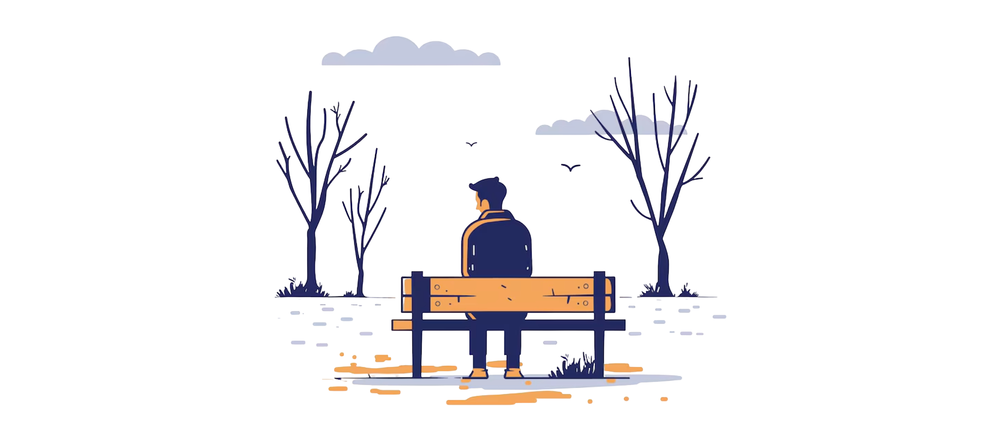

Как победить одиночество?

Согласно одному опросу, проведённому в большинстве стран мира, примерно каждый четвёртый человек чувствует себя одиноко. Бывает ли вам одиноко? Сегодня всё больше людей испытывает одиночество. Если вы тоже чувствуете себя одиноко, можно ли справиться с этой проблемой? Да, и у многих это получилось. Победить одиночество под силу и вам.
Одиночество знакомо многим, но причины у него разные — и чтобы справиться с этим чувством, полезно сначала понять, откуда оно берётся. У одних людей просто не получается проводить достаточно времени с другими: не хватает друзей или родных рядом, круг общения потерян из-за переезда, учёбы или выхода на пенсию, а иногда просто не находится тех, кто разделяет их интересы. У других общения хватает, но не хватает глубины — близких, доверительных отношений. Это особенно заметно после потери спутника жизни, развода или когда человеку кажется, что его никто по-настоящему не понимает и не замечает.
Есть и обстоятельства, которые могут усиливать одиночество. Например, современные технологии во многом облегчают жизнь, но одновременно сокращают количество живого общения: покупки можно делать не выходя из дома, работа всё чаще проходит удалённо, а социальные сети вместо чувства близости нередко вызывают зависть, сравнение себя с другими и ощущение, что ты остаёшься в стороне.
Проблемы с психическим здоровьем идут рука об руку с одиночеством, лишь усиливая чувство подавленности. Человек в таком состоянии может думать, что его жизнь лишена смысла и он никому не нужен. Кроме того, чувство тревоги и низкая самооценка могут мешать человеку идти на контакт с другими и обращаться к ним за помощью.
Травмы прошлого. Если в прошлом человек подвергался физическому или эмоциональному насилию, последствия могут ощущаться долгие годы. Ему может быть трудно доверять другим и сближаться с ними.
Как победить одиночество?
Одиночество можно сравнить с чувством голода. Голод сигнализирует, что нам нужно поесть, а одиночество подсказывает, что нам не хватает близких, дружеских отношений. Как подружиться с человеком, если вы не уверены, что он хочет стать вашим другом? Не ждите, пока он сделает первый шаг. Сами проявите инициативу. Ищите возможности помогать другим и поддерживать их, когда им тяжело.
Попробуйте жить по правилу: «Большее счастье — давать, а не получать» *
Работает ли это?
Подумайте вот о чём: с кем вам нравится проводить время? С тем, кто зациклен только на себе, или с тем, кто интересуется другими? Конечно, всем нам приятнее общаться с теми, кто заботится о других. Если вы сделали что-то для человека, он, скорее всего, захочет узнать вас получше и сделать что-то хорошее в ответ.
Конечно, не каждый добрый поступок приведёт к дружбе. Но в любом случае, проявляя доброту, вы только выигрываете. Когда вы помогаете другим, ваши негативные чувства, в том числе чувство одиночества, отходят на второй план. Те, кто помогает другим, чувствуют себя нужными и уверены, что живут не зря. Они более позитивно смотрят на себя и на свои обстоятельства. Зачастую они меньше подвержены тревоге и депрессии, у них меньше проблем со здоровьем и они ведут более счастливую жизнь.
Как это применить?
Начните с малого
Для начала попробуйте проявить внимание к тем, кого вы уже знаете. Скорее всего, это будет проще и не так страшно, как пытаться наладить контакт с совершенно новыми людьми. К примеру, можно чем-то угостить человека или подарить ему скромный подарок. Даже небольшое проявление доброты может многое значить для других. Когда вы остаётесь одни, почему бы не воспользоваться этим временем и не послать короткое сообщение кому-то из знакомых, чтобы поинтересоваться, как у них дела? Люди ценят, когда кто-то о них думает.
Заботьтесь о других
Подумайте о тех, кого вы знаете, и спросите себя: «В чём они нуждаются? Что их может порадовать?» Предложите конкретную помощь, например тому, кто очень загружен. Например, пожилые люди могут научить других какому-то полезному навыку или как-то ещё передать им свой богатый жизненный опыт, а молодые – помочь в разными бытовыми вопросами. То, что вам кажется мелочью, для других может значить очень много.
Будьте наблюдательны
Занимаясь повседневными делами, обращайте внимание на то, в чём нуждаются окружающие. Когда уместно, улыбайтесь тем, кого встречаете, и здоровайтесь с ними. Если вы замечаете, что человек расстроен или у него проблемы со здоровьем, постарайтесь поставить себя на его место и проникнуться его чувствами. Тогда вы захотите как-то ему помочь. Так в вашей жизни появятся новые знакомые, которые со временем могут стать вам настоящими друзьями.
Не забывайте о себе
Заботьтесь о своём здоровье и высыпайтесь. Помните, что ваши возможности ограничены, и не доводите себя до выгорания. Тогда у вас будет запас физических и эмоциональных сил, чтобы помогать другим. Люди по своей природе нуждаются друг в друге, поэтому старайтесь думать о других и помогать им, в то же время не забывая о себе и своих потребностях. Так вы сможете успешно бороться с одиночеством.
↑ * - источник: Св. Писание